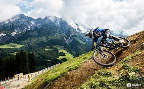

DOWNHILL
El downhill es una disciplina del ciclismo
de montaña que se caracteriza por descender por pendientes empinadas y
terrenos técnicos a gran velocidad. Las bicicletas de downhill están
diseñadas específicamente para este tipo de terreno y ofrecen un
rendimiento excepcional en condiciones extremas

HAZTE CON LA TUYA